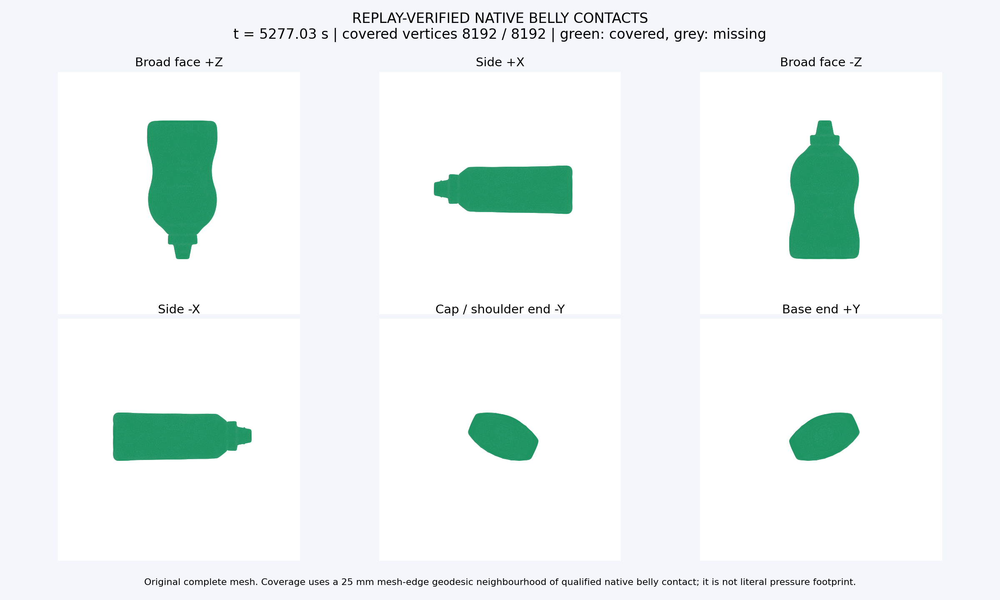
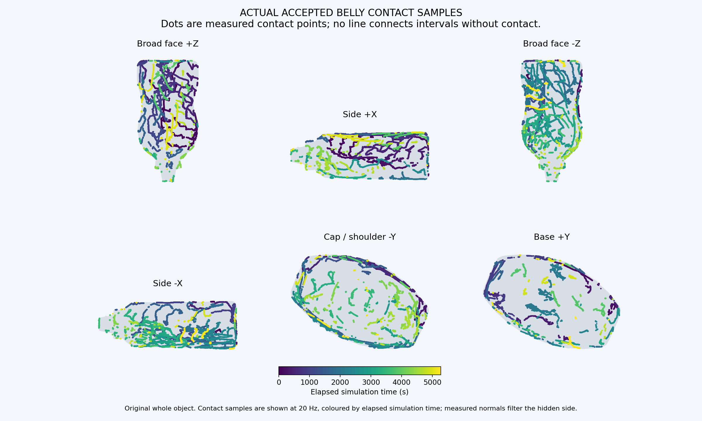
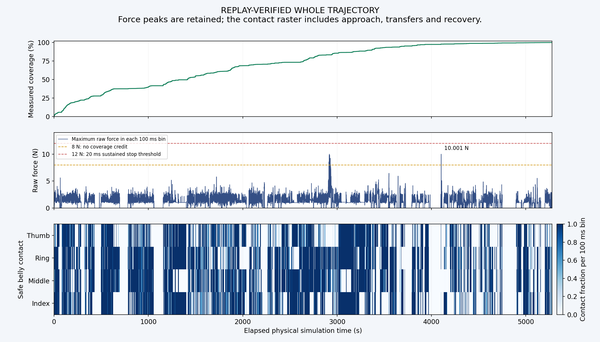

Mustard · 四指协同整瓶遍历
整瓶实测覆盖完成：100.000%，8192/8192顶点、388/388目标；实际运行5277.036s。
覆盖采用既定25mm网格边测地接触邻域，并非皮肤压力足迹面积。全程仍有离面调姿，最长全手有效接触中断146.156秒，尚未达到无间断贴面遍历。
腕部与四指共同求解，每根手指主动寻找掌侧指腹接触。沿表面优先连续滑动和转向，必要时才撤离调姿。
保留原始零覆盖初态及完整接触记录，在2260.000、4102.920、5273.000s更新控制器；物理状态准确接续，整条轨迹从头连续独立核验。这是开发续接结果，未拼合独立轨迹，不作为单版本性能对比。
瓶底补充特写 · 1倍速
局部相机隐藏机械臂和地面、将物体透明显示，以便看清三根长指。左侧保留原始全景；关节运动和接触来自同一条原生记录，这是约4秒节选。
整个物体是否真正覆盖

| 区域 | 已覆盖顶点 | 面积指标 |
|---|
| 宽面 +Z | 2637/2637 | 100.00% |
| 侧面 +X | 1128/1128 | 100.00% |
| 宽面 −Z | 2005/2005 | 100.00% |
| 侧面 −X | 1093/1093 | 100.00% |
| 瓶盖/瓶肩端 −Y | 630/630 | 100.00% |
| 瓶底端 +Y | 699/699 | 100.00% |
绿色为原生安全指腹接触的25mm网格边测地邻域，灰色为未覆盖；不是皮肤压力足迹面积。原始网格分母保持，不用规划点授予覆盖。

四指参与和自然屈伸
| 手指 | 完整时间轴接触率 | 合格接触时切向材料运动 | 实际PIP范围 | 实际DIP范围 |
|---|
| 食指 | 50.7% | 9.088m | 5.6°–54.5° | 3.9°–43.0° |
| 中指 | 57.3% | 10.128m | 5.6°–54.4° | 3.9°–43.0° |
| 无名指 | 57.8% | 10.388m | 5.6°–54.5° | 3.9°–43.0° |
| 拇指 | 47.9% | 8.152m | -0.3°–57.3° | -0.1°–57.3° |
完整时间轴包含初始接近、必要离面和恢复。各指存在失联和恢复，四指任务持续参与，不能把四指率解释成始终四指同时接触。
| 阶段 | 时长 | ≥3指同时接触 | 4指同时接触 |
|---|
| 四指主动接近 | 443.074s | 20.7% | 1.3% |
| 整手贴面滑动 | 2976.922s | 77.2% | 29.1% |
| 主动卸力 | 151.190s | 39.4% | 15.5% |
| 必要撤离 | 54.898s | 14.1% | 4.0% |
| 必要离面调姿 | 1055.556s | 0.0% | 0.0% |
| 贴面调整方位 | 510.854s | 59.4% | 10.8% |
| 主动重新接触 | 84.542s | 80.8% | 29.8% |
完整轨迹、力与接触间断

换姿计划70次（含中断后的重新规划）；最长全手安全指腹接触中断146.156s；原始力峰10.0007N。
原始力达到8N以上累计0.146s，最长单段0.040s；这些状态全部排除覆盖计分，并保留在完整回放中。
原生验证
2638518个2ms状态从唯一初态连续独立重放通过，分块不重置；已执行命令全部通过原严格几何与上一参考守护。四指接触、力和覆盖重新测量。当前仅验证固定Mustard、零重力、MCC条件，DP继续暂缓。
终止原因：FULL_MEASURED_BELLY_SURFACE。旧单领触整瓶和旧局部试验均未继承到本轮覆盖。
整手指标 · 独立原生核验 · 分区覆盖 · 运行结果 · 冻结清单 · 路线与换面事件